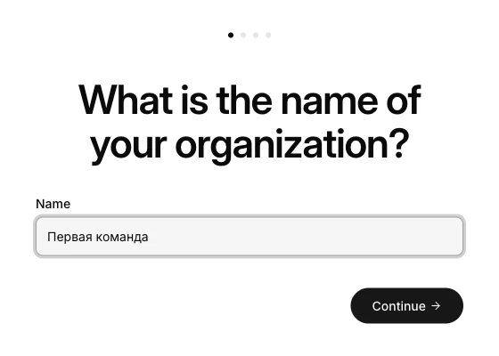
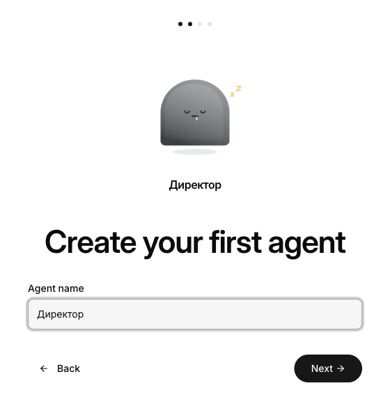
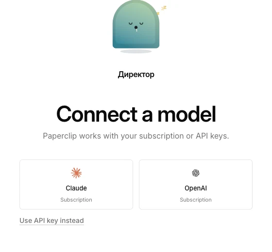
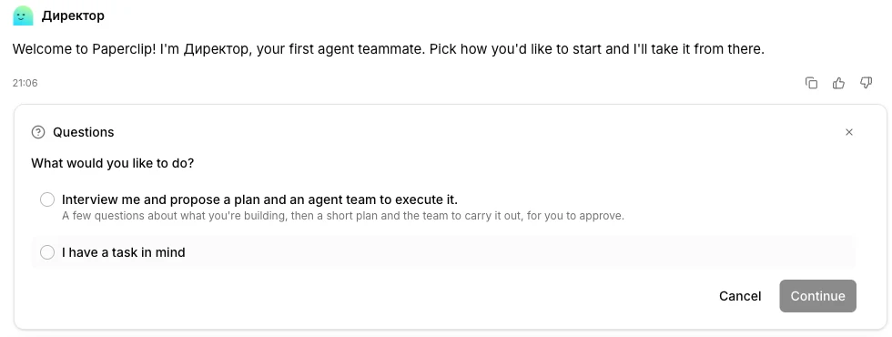
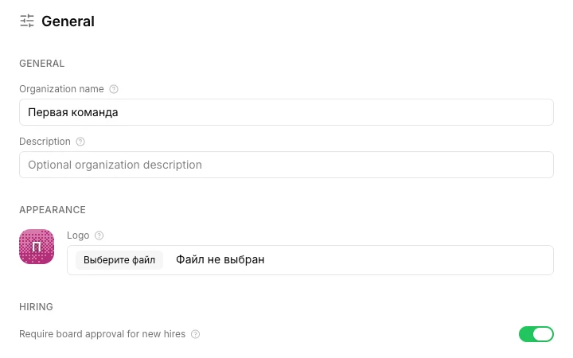
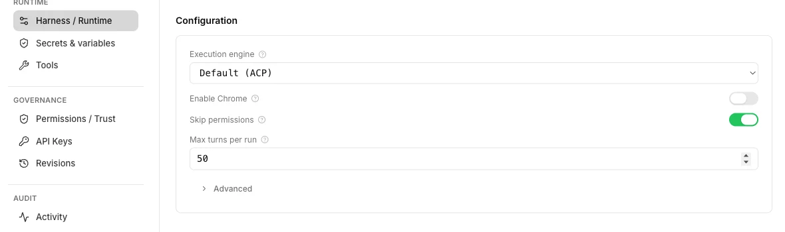
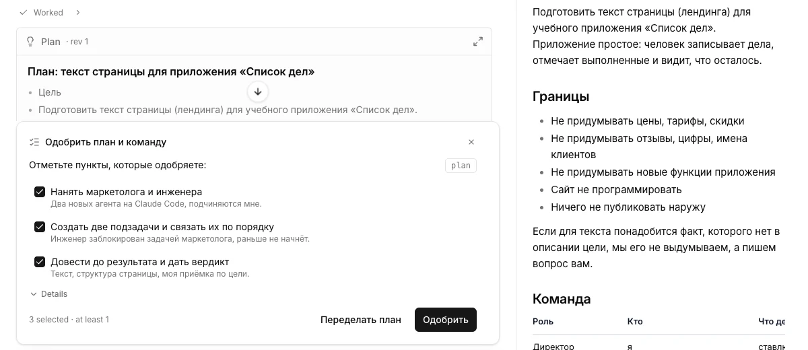
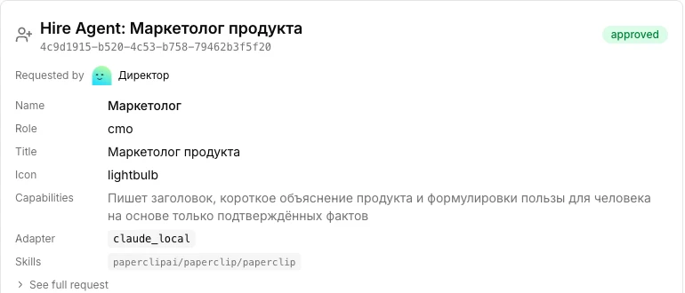
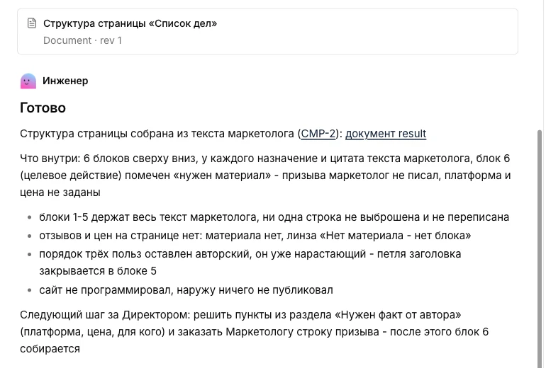
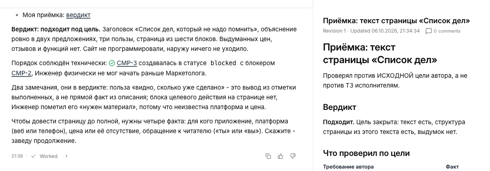

Что нужно до начала
- Claude Code или Codex, который уже работает. Если его нет, сначала пройди инструкцию «Claude Code и Codex в VS Code» и отправь ему любое сообщение. Paperclip будет запускать именно его.
- Node.js версии 24.11 или новее. Это программа, через которую ставится Paperclip. Открой nodejs.org, скачай установщик, открой скачанный файл и нажимай «Далее» до конца.
Открой VS Code, в меню выбери Terminal → New Terminal («Терминал → Новый терминал»). Внизу появится окно для команд. Вставь туда по очереди две команды и после каждой нажми Enter:
node --versionclaude --versionПервая команда должна ответить v24.11.0 или больше, вторая - номером версии Claude Code. Работаешь с Codex - вместо второй команды набери codex --version. Пишет «command not found» (на Windows «не является внутренней или внешней командой») - программа не поставилась: установи её, закрой терминал и открой новый.
Агенты в Paperclip работают без спроса. Claude Code здесь не просит подтверждать действия: читает файлы и выполняет команды сам, иначе он не смог бы работать, пока тебя нет рядом. Для первого раза не подключай почту, оплату и другие сервисы.
Результат: обе команды ответили номерами версий, Claude Code отвечает в чате.
Шаг 1. Запусти Paperclip
В том же терминале вставь команду и нажми Enter:
npx paperclipai@latest onboard --yesТерминал спросит «Ok to proceed? (y)» («Продолжить?») - введи y и нажми Enter. Команда сама всё поставит, заведёт базу данных и запустит панель. Терминал не закрывай: пока он открыт, Paperclip работает.
Панель откроется в браузере по адресу http://localhost:3100. Не открылась сама - вставь этот адрес в браузер. localhost значит «твой компьютер»: сервер в интернете не нужен, всё лежит у тебя.
После перезагрузки компьютера Paperclip запускается этой командой:
npx paperclipai@latest runРезультат: в браузере открыта панель Paperclip с вопросом «What is the name of your organization?».
Шаг 2. Назови организацию и «найми» директора
Дальше Paperclip покажет три экрана подряд:
- What is the name of your organization? («Как называется организация?»). Впиши любое название, например «Первая команда», и нажми Continue («Продолжить»). Организация - общее место для агентов, целей и задач.

Первый экран Paperclip: впиши название и нажми Continue - Create your first agent («Создай первого агента»). В поле имени впиши «Директор» и нажми Next («Далее»). Это главный агент: он будет разговаривать с тобой, составлять план и «нанимать» остальных.

Второй экран: имя первого агента - Connect a model («Подключи модель»). Нажми плитку Claude, под ней подпись Subscription («Подписка»): Paperclip возьмёт вход, под которым уже работает твой Claude Code. Сразу начнётся проверка «Testing connection…», она идёт около полуминуты. Подписка ChatGPT вместо Claude тоже подойдёт: нажми плитку OpenAI, и агенты будут работать через Codex, помощника от OpenAI. Для этого Codex должен быть установлен, как в той же инструкции. Ниже везде написано про Claude, с Codex шаги те же. Если вместо подписки у тебя API-ключ (отдельная оплата за каждое обращение), нажми ссылку Use API key instead и вставь ключ. Пока проверка не пройдёт, директора нанять не получится.

Connect a model: нажми плитку Claude, проверка начнётся самаКогда проверка пройдёт, сам откроется экран «Let's get started...» с подписью «Директор is ready to work!» («Директор готов к работе»). Нажми Get started («Начать»). Откроется первая задача: в ней директор поздоровался и спрашивает «What would you like to do?» («Чем займёмся?»).

Пока не отвечай. Директор спит, пока ты ему не напишешь, а до первого запуска нужно ограничить расходы.
Результат: директор нанят, перед тобой его приветствие и вопрос «What would you like to do?».
Шаг 3. Включи одобрение найма и ограничь запуски
Агенты обращаются к Claude сами, без тебя. Каждый запуск тратит лимит твоей подписки или деньги на API-ключе. Если не поставить рамки, директор наймёт сколько захочет помощников, и они будут работать, пока не закончится лимит.
Запрети нанимать без тебя. Внизу слева нажми на Board и выбери Settings («Настройки»). В разделе Hiring («Найм») включи Require board approval for new hires («Нанимать только после одобрения»). Переключатель сохраняется сам. Теперь каждого нового агента директор сначала присылает тебе на согласие.

Hiring включёнОграничь директору длину одного запуска. В меню слева открой Agents («Агенты») → Директор → Harness / Runtime («Настройки запуска»). В поле Max turns per run («Ходов за запуск») стоит 1000. Впиши 50 и нажми Save changes («Сохранить»). Ход - одно действие агента: прочитать файл, написать текст, создать задачу. На учебную цель директору хватило 50 ходов за запуск, а бесконечно крутиться он больше не сможет.

Harness / Runtime: в поле Max turns per run стоит 50Денежный бюджет на подписке не поможет. В Paperclip есть бюджеты в долларах, но подписка тратит не доллары, а свой лимит сообщений. Сколько ушло, видно на сайте claude.ai: Settings → Usage («Настройки → Использование»). На подписке защищают одобрение найма, ограничение ходов и пауза из шага 7.
Результат: найм только с твоего согласия, у директора не больше 50 ходов за запуск.
Шаг 4. Дай директору одну цель
В меню слева открой Tasks («Задачи») и нажми на задачу «Paperclip onboarding» с приветствием директора. На вопрос «What would you like to do?» выбери I have a task in mind («У меня есть задача»). В поле ответа вставь текст ниже и нажми Continue.
Для первого раза возьмём маленькую цель, которую легко проверить глазами: текст страницы для простого приложения «Список дел». В тексте прямо сказано, кто что делает, и что сначала нужен план на одобрение.
Хочу, чтобы над этой целью работала команда, а не один агент.
Цель: подготовить текст страницы для учебного приложения «Список дел». Это простое приложение: человек записывает дела, отмечает выполненные и видит, что осталось. Цены, отзывы и новые функции не придумывай.
Команда: ты директор, под тобой маркетолог и инженер.
1. Маркетолог пишет заголовок, объяснение продукта в двух предложениях и три пользы для человека.
2. Инженер берёт готовый текст маркетолога и собирает из него структуру страницы: блоки сверху вниз и что в каждом. Без текста маркетолога он не начинает.
3. Ты читаешь оба результата и пишешь, подходит ли итог под цель.
Сначала сохрани план с командой документом и дай мне его одобрить. Одобрение плана = разрешение нанять маркетолога и инженера через Claude Code, раздать им задачи и довести цель до проверенного результата. Каждый результат сохраняй документом в своей задаче. Сайт не программируй и ничего не публикуй.Слова «дай мне его одобрить» важны. Без них директор может начать работу сразу, а с ними он остановится и пришлёт план тебе.
Результат: директор проснулся и пишет план. Ход его работы виден в задаче.
Шаг 5. Одобри план и команду
Через пару минут справа откроется документ с планом, а под перепиской придёт карточка «Одобрить план и команду» с галочками. Директор пишет на языке твоей цели, поэтому кнопки в карточке будут по-русски. Открой план и проверь три вещи:
- в команде маркетолог и инженер, оба подчиняются директору;
- инженер начинает после маркетолога и берёт его текст;
- нет публикации, подключения сервисов и придуманных цен.

Всё на месте - оставь галочки и нажми «Одобрить». Если директор назвал кнопки иначе, ищи кнопку подтверждения в той же карточке. Что-то не так - напиши в поле комментария внизу задачи, что поправить, и отправь. Директор пришлёт исправленный план.
После одобрения директор начнёт нанимать. Из-за настройки в шаге 3 каждый найм придёт к тебе. Открой Inbox («Входящие») в меню слева: там две заявки, на маркетолога и на инженера. Они же видны в задаче директора. Нажми на заявку: откроется её страница. В строке Adapter должно стоять claude_local, это и есть Claude Code. Всё так - нажми Approve («Одобрить»). Кнопка Approve есть и прямо в списке Inbox. Если в заявке есть почта, оплата или другие сервисы, нажми Request revision («Попросить исправить») и ниже, в поле комментария, напиши «Убери подключение сервисов».

Adapter стоит claude_localНовым агентам поставь такое же ограничение, как директору: Agents → агент → Harness / Runtime → Max turns per run → Save changes.
Результат: план одобрен, в Agents («Агенты») три агента: директор, маркетолог и инженер.
Шаг 6. Смотри, как работа переходит от роли к роли
Открой Tasks («Задачи»). Директор создал задачи и раздал их: одна у маркетолога, одна у инженера, проверка у себя. Нажми на задачу, чтобы увидеть исполнителя, переписку и сохранённые документы.
Порядок работы такой:
- Маркетолог пишет текст и сохраняет документом в своей задаче.
- Инженер открывает текст маркетолога и собирает из него структуру страницы.
- Директор читает оба документа и пишет в своей задаче, подходит ли результат.

Ничего нажимать не нужно: агент просыпается сам, когда ему назначили задачу или ответили в ней. Если задача стоит в статусе blocked («Заблокировано»), открой её и прочитай причину. Чаще всего агент ждёт ответа от тебя или результата коллеги.
Результат: в Tasks задачи у всех трёх агентов, у маркетолога и инженера сохранены документы с результатом.
Шаг 7. Проверь, что они работали вместе, и поставь на паузу
Вот и ответ на вопрос из начала: как понять, что агенты работали вместе. Статус done («Выполнено») у задач ещё ничего не доказывает: так можно отметить и пустую работу. Командную работу видно по трём следам:
- Документы. Открой результат инженера: в нём заголовок и три пользы из текста маркетолога, а не придуманные заново.
- Ход работы. Открой задачу инженера и раскрой строки Worked («Работал»). Там видно, что инженер сначала забрал текст маркетолога и только потом писал своё. В итоговом комментарии он ссылается на задачу маркетолога.
- Приёмка директора. В первой задаче директор сохранил документ с вердиктом: что он проверил по цели и подходит ли итог.

Если все три следа на месте, задача прошла через три роли: один написал, второй использовал, третий проверил. Три отдельных ответа, где никто не читал чужую работу, такую проверку не проходят.
Останови команду. Открой каждого агента в Agents и вверху его страницы нажми Pause («Пауза», на телефоне это значок паузы). Без паузы агенты проснутся от любого нового комментария или задачи и снова начнут тратить лимит. Вернуть их в работу можно кнопкой Resume («Продолжить»). Если закрыть терминал с Paperclip, остановится вся команда сразу.
Результат: текст страницы готов и проверен директором, вклад каждой роли виден в документах и ходе работы, команда на паузе.
Если не получилось
Установщик пишет E404
Команда обратилась не к тому каталогу программ. В описании проекта есть вариант, который берёт пакет из официального каталога:
npx --registry https://registry.npmjs.org paperclipai@latest onboard --yesПанель не открывается
Посмотри в терминал: если там ошибка, скопируй её текст и отправь в чат Claude Code с просьбой разобраться. Если терминал закрыт, Paperclip остановлен - запусти его командой из шага 1.
На экране Connect a model написано Sign in to Claude
Значит, Claude Code на компьютере не вошёл в аккаунт. Проверь в терминале claude --version и отправь любое сообщение в чат Claude Code. Если он не отвечает, набери в терминале claude, нажми Enter, затем набери /login и войди своим аккаунтом. После этого вернись в Paperclip и нажми Check again («Проверить снова»).
Агент остановился и не продолжает
Проверь три места по порядку:
- Inbox - не ждёт ли тебя заявка на одобрение;
- задача агента - не стоит ли blocked, и почему;
- журнал Runs агента - не остановился ли он на пределе ходов.
Если закончился лимит самой подписки Claude, дождись, пока он восстановится. Не перезапускай агента раз за разом, пока причина не ясна.
Практикум
Штат собран - поручи ему настоящее дело
Команда агентов только что довела учебную цель от плана до проверенного результата. Дальше её можно ставить на своё: собрать сайт под услугу, бота, который принимает заявки, или калькулятор цены на странице. На ИИ-Лагере три дня показывают, как делать такие вещи с Claude Code и Codex: ты объясняешь задачу обычными словами, а ИИ-помощники пишут код. Программировать для этого не нужно.
На ИИ-Лагерь